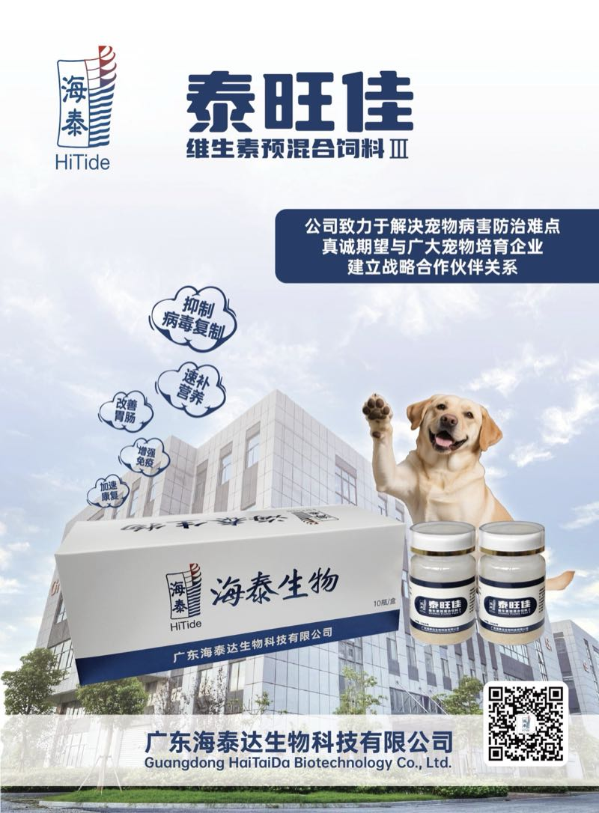

犬用粉剂，含犬瘟热、犬细小、犬冠状病毒结合蛋白，配合维生素快速补充营养、增强免疫、加速康复。A canine powder containing receptor-binding proteins against canine distemper, canine parvovirus and canine coronavirus, combined with vitamins to rapidly replenish nutrition, boost immunity and speed recovery.
选择对应症状，直达推荐产品。Pick a symptom to jump to the recommended product.
常见问题正在整理中，如需技术答疑请联系海泰技术团队。FAQ are being compiled. For technical questions, contact the HiTide technical team.